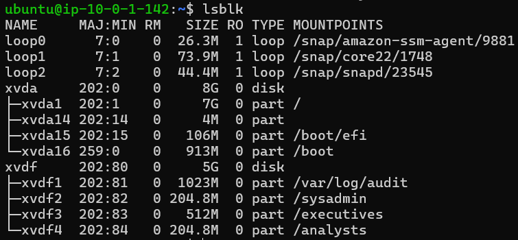
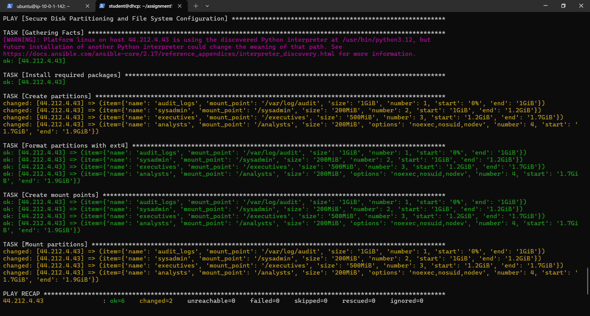

Secure Disk Partitioning and File System Configuration
Use the Table of Contents to the side to jump around as needed!
Infrastructure Details
- Server OS: Ubuntu Linux
- Additional Storage: 5GB disk (
/dev/sdb) - Partitions and Mount Points:
/var/log/audit: 1GB for audit logs/sysadmin: 200MB for system administrator files/executives: 500MB for executive use/analysts: 200MB for analyst use (with restricted mount options)
- File System:
ext4for all partitions
Partitioning and File System Configuration
The Ansible playbook:
- Installs
partedif required. - Creates partitions using the
partedmodule. - Formats each partition with
ext4. - Creates the necessary mount points.
- Mounts partitions with specified options.
Security Considerations
- The
/analystspartition is mounted withnoexec, nosuid, nodevto prevent execution of binaries and enhance security. - The
/var/log/auditpartition ensures audit logs are securely stored and isolated. - Other partitions provide separation of concerns, reducing the risk of data corruption or security breaches.
Testing and Validation
Test Cases
- Partition Verification:
Expected: The new partitions should appear with correct sizes.lsblk - Security Options Check:
Expected:mount | grep /analysts/analystsshould havenoexec, nosuid, nodevoptions applied.
Results
The following shows the successful tests and run of the playbook.
Verified Partitions
Everything in it’s right place.
Security Options Applied

Looks secure to me.
Successful Playbook Run
If it's hard to see you can click the image to open it in a new tab.
This took a good bit of time, mostly to get my terraform to deploy a working and internet accessible EC2 instance.
The Playbook
---
- name: Secure Disk Partitioning and File System Configuration
hosts: all
remote_user: ubuntu
become: yes
vars:
disk_device: "/dev/xvdf"
partitions:
- name: audit_logs
mount_point: "/var/log/audit"
size: "1GiB"
number: 1
start: "0%"
end: "1GiB"
- name: sysadmin
mount_point: "/sysadmin"
size: "200MiB"
number: 2
start: "1GiB"
end: "1.2GiB"
- name: executives
mount_point: "/executives"
size: "500MiB"
number: 3
start: "1.2GiB"
end: "1.7GiB"
- name: analysts
mount_point: "/analysts"
size: "200MiB"
options: "noexec,nosuid,nodev"
number: 4
start: "1.7GiB"
end: "1.9GiB"
tasks:
- name: Install required packages
apt:
name: parted
state: present
- name: Create partitions
parted:
device: "{{ disk_device }}"
number: "{{ item.number }}"
state: present
fs_type: ext4
part_start: "{{ item.start }}"
part_end: "{{ item.end }}"
loop: "{{ partitions }}"
- name: Format partitions with ext4
filesystem:
fstype: ext4
dev: "{{ disk_device }}{{ item.number }}"
loop: "{{ partitions }}"
- name: Create mount points
file:
path: "{{ item.mount_point }}"
state: directory
owner: root
group: root
mode: "0755"
loop: "{{ partitions }}"
- name: Mount partitions
mount:
path: "{{ item.mount_point }}"
src: "{{ disk_device }}{{ item.number }}"
fstype: ext4
opts: "{{ item.options | default('defaults') }}"
state: mounted
loop: "{{ partitions }}"